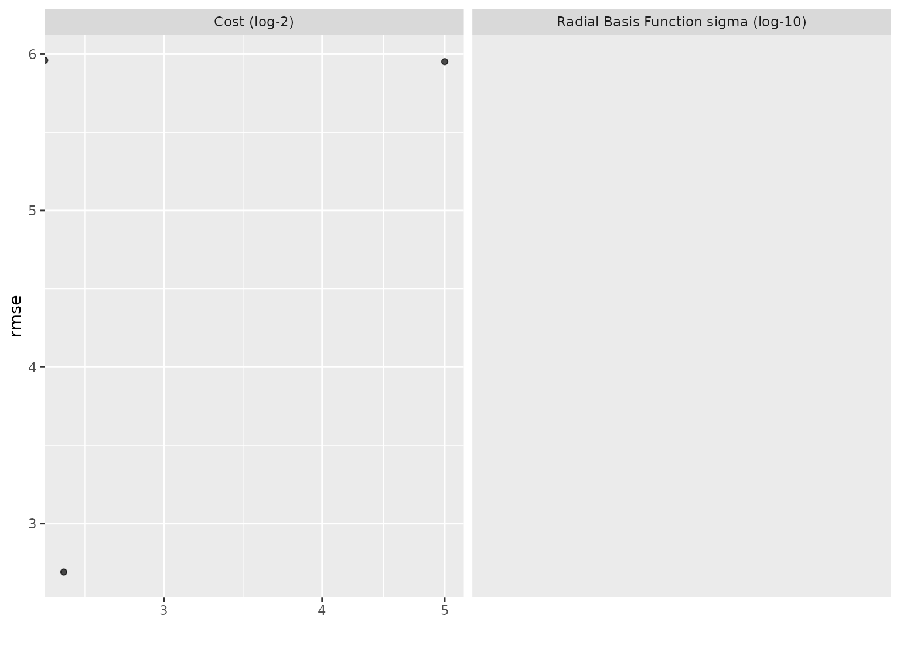

tune_grid() computes a set of performance metrics (e.g. accuracy or RMSE)
for a pre-defined set of tuning parameters that correspond to a model or
recipe across one or more resamples of the data.
tune_grid(object, ...)
# S3 method for model_spec
tune_grid(
object,
preprocessor,
resamples,
...,
param_info = NULL,
grid = 10,
metrics = NULL,
control = control_grid()
)
# S3 method for workflow
tune_grid(
object,
resamples,
...,
param_info = NULL,
grid = 10,
metrics = NULL,
control = control_grid()
)A parsnip model specification or a workflows::workflow().
Not currently used.
A traditional model formula or a recipe created using
recipes::recipe().
An rset() object.
A dials::parameters() object or NULL. If none is given,
a parameters set is derived from other arguments. Passing this argument can
be useful when parameter ranges need to be customized.
A data frame of tuning combinations or a positive integer. The data frame should have columns for each parameter being tuned and rows for tuning parameter candidates. An integer denotes the number of candidate parameter sets to be created automatically.
A yardstick::metric_set() or NULL.
An object used to modify the tuning process.
An updated version of resamples with extra list columns for .metrics and
.notes (optional columns are .predictions and .extracts). .notescontains warnings and errors that occur during execution.
Suppose there are m tuning parameter combinations. tune_grid() may not
require all m model/recipe fits across each resample. For example:
In cases where a single model fit can be used to make predictions for different parameter values in the grid, only one fit is used. For example, for some boosted trees, if 100 iterations of boosting are requested, the model object for 100 iterations can be used to make predictions on iterations less than 100 (if all other parameters are equal).
When the model is being tuned in conjunction with pre-processing and/or post-processing parameters, the minimum number of fits are used. For example, if the number of PCA components in a recipe step are being tuned over three values (along with model tuning parameters), only three recipes are trained. The alternative would be to re-train the same recipe multiple times for each model tuning parameter.
The foreach package is used here. To execute the resampling iterations in
parallel, register a parallel backend function. See the documentation for
foreach::foreach() for examples.
For the most part, warnings generated during training are shown as they occur
and are associated with a specific resample when control(verbose = TRUE).
They are (usually) not aggregated until the end of processing.
If no tuning grid is provided, a semi-random grid (via
dials::grid_latin_hypercube()) is created with 10 candidate parameter
combinations.
When provided, the grid should have column names for each parameter and
these should be named by the parameter name or id. For example, if a
parameter is marked for optimization using penalty = tune(), there should
be a column named penalty. If the optional identifier is used, such as
penalty = tune(id = 'lambda'), then the corresponding column name should
be lambda.
In some cases, the tuning parameter values depend on the dimensions of the
data. For example, mtry in random forest models depends on the number of
predictors. In this case, the default tuning parameter object requires an
upper range. dials::finalize() can be used to derive the data-dependent
parameters. Otherwise, a parameter set can be created (via
dials::parameters()) and the dials update() function can be used to
change the values. This updated parameter set can be passed to the function
via the param_info argument.
To use your own performance metrics, the yardstick::metric_set() function
can be used to pick what should be measured for each model. If multiple
metrics are desired, they can be bundled. For example, to estimate the area
under the ROC curve as well as the sensitivity and specificity (under the
typical probability cutoff of 0.50), the metrics argument could be given:
metrics = metric_set(roc_auc, sens, spec)Each metric is calculated for each candidate model.
If no metric set is provided, one is created:
For regression models, the root mean squared error and coefficient of determination are computed.
For classification, the area under the ROC curve and overall accuracy are computed.
Note that the metrics also determine what type of predictions are estimated during tuning. For example, in a classification problem, if metrics are used that are all associated with hard class predictions, the classification probabilities are not created.
The out-of-sample estimates of these metrics are contained in a list column
called .metrics. This tibble contains a row for each metric and columns
for the value, the estimator type, and so on.
collect_metrics() can be used for these objects to collapse the results
over the resampled (to obtain the final resampling estimates per tuning
parameter combination).
When control(save_preds = TRUE), the output tibble contains a list column
called .predictions that has the out-of-sample predictions for each
parameter combination in the grid and each fold (which can be very large).
The elements of the tibble are tibbles with columns for the tuning
parameters, the row number from the original data object (.row), the
outcome data (with the same name(s) of the original data), and any columns
created by the predictions. For example, for simple regression problems, this
function generates a column called .pred and so on. As noted above, the
prediction columns that are returned are determined by the type of metric(s)
requested.
This list column can be unnested using tidyr::unnest() or using the
convenience function collect_predictions().
The extract control option will result in an additional function to be
returned called .extracts. This is a list column that has tibbles
containing the results of the user's function for each tuning parameter
combination. This can enable returning each model and/or recipe object that
is created during resampling. Note that this could result in a large return
object, depending on what is returned.
The control function contains an option (extract) that can be used to
retain any model or recipe that was created within the resamples. This
argument should be a function with a single argument. The value of the
argument that is given to the function in each resample is a workflow
object (see workflows::workflow() for more information). There are two
helper functions that can be used to easily pull out the recipe (if any)
and/or the model: extract_recipe() and extract_model().
As an example, if there is interest in getting each model back, one could use:
extract = function (x) extract_fit_parsnip(x)Note that the function given to the extract argument is evaluated on
every model that is fit (as opposed to every model that is evaluated).
As noted above, in some cases, model predictions can be derived for
sub-models so that, in these cases, not every row in the tuning parameter
grid has a separate R object associated with it.
# \donttest{
library(recipes)
library(rsample)
library(parsnip)
library(workflows)
library(ggplot2)
# ---------------------------------------------------------------------------
set.seed(6735)
folds <- vfold_cv(mtcars, v = 5)
# ---------------------------------------------------------------------------
# tuning recipe parameters:
spline_rec <-
recipe(mpg ~ ., data = mtcars) %>%
step_ns(disp, deg_free = tune("disp")) %>%
step_ns(wt, deg_free = tune("wt"))
lin_mod <-
linear_reg() %>%
set_engine("lm")
# manually create a grid
spline_grid <- expand.grid(disp = 2:5, wt = 2:5)
# Warnings will occur from making spline terms on the holdout data that are
# extrapolations.
spline_res <-
tune_grid(lin_mod, spline_rec, resamples = folds, grid = spline_grid)
spline_res
#> # Tuning results
#> # 5-fold cross-validation
#> # A tibble: 5 × 4
#> splits id .metrics .notes
#> <list> <chr> <list> <list>
#> 1 <split [25/7]> Fold1 <tibble [32 × 6]> <tibble [0 × 3]>
#> 2 <split [25/7]> Fold2 <tibble [32 × 6]> <tibble [0 × 3]>
#> 3 <split [26/6]> Fold3 <tibble [32 × 6]> <tibble [0 × 3]>
#> 4 <split [26/6]> Fold4 <tibble [32 × 6]> <tibble [0 × 3]>
#> 5 <split [26/6]> Fold5 <tibble [32 × 6]> <tibble [0 × 3]>
show_best(spline_res, metric = "rmse")
#> # A tibble: 5 × 8
#> disp wt .metric .estimator mean n std_err .config
#> <int> <int> <chr> <chr> <dbl> <int> <dbl> <chr>
#> 1 3 2 rmse standard 2.54 5 0.207 Preprocessor02_Model1
#> 2 3 3 rmse standard 2.64 5 0.234 Preprocessor06_Model1
#> 3 4 3 rmse standard 2.82 5 0.456 Preprocessor07_Model1
#> 4 4 2 rmse standard 2.93 5 0.489 Preprocessor03_Model1
#> 5 4 4 rmse standard 3.01 5 0.475 Preprocessor11_Model1
# ---------------------------------------------------------------------------
# tune model parameters only (example requires the `kernlab` package)
car_rec <-
recipe(mpg ~ ., data = mtcars) %>%
step_normalize(all_predictors())
svm_mod <-
svm_rbf(cost = tune(), rbf_sigma = tune()) %>%
set_engine("kernlab") %>%
set_mode("regression")
# Use a space-filling design with 7 points
set.seed(3254)
svm_res <- tune_grid(svm_mod, car_rec, resamples = folds, grid = 7)
svm_res
#> # Tuning results
#> # 5-fold cross-validation
#> # A tibble: 5 × 4
#> splits id .metrics .notes
#> <list> <chr> <list> <list>
#> 1 <split [25/7]> Fold1 <tibble [14 × 6]> <tibble [0 × 3]>
#> 2 <split [25/7]> Fold2 <tibble [14 × 6]> <tibble [0 × 3]>
#> 3 <split [26/6]> Fold3 <tibble [14 × 6]> <tibble [0 × 3]>
#> 4 <split [26/6]> Fold4 <tibble [14 × 6]> <tibble [0 × 3]>
#> 5 <split [26/6]> Fold5 <tibble [14 × 6]> <tibble [0 × 3]>
show_best(svm_res, metric = "rmse")
#> # A tibble: 5 × 8
#> cost rbf_sigma .metric .estimator mean n std_err .config
#> <dbl> <dbl> <chr> <chr> <dbl> <int> <dbl> <chr>
#> 1 0.304 0.117 rmse standard 3.91 5 0.652 Preprocessor1_Mod…
#> 2 4.53 0.000420 rmse standard 4.13 5 0.741 Preprocessor1_Mod…
#> 3 0.00247 0.00931 rmse standard 5.94 5 0.966 Preprocessor1_Mod…
#> 4 23.2 0.000000684 rmse standard 5.94 5 0.967 Preprocessor1_Mod…
#> 5 0.0126 0.00000239 rmse standard 5.96 5 0.970 Preprocessor1_Mod…
autoplot(svm_res, metric = "rmse") +
scale_x_log10()
#> Warning: NaNs produced
#> Warning: Transformation introduced infinite values in continuous x-axis
#> Warning: Removed 12 rows containing missing values (geom_point).

# ---------------------------------------------------------------------------
# Using a variables preprocessor with a workflow
# Rather than supplying a preprocessor (like a recipe) and a model directly
# to `tune_grid()`, you can also wrap them up in a workflow and pass
# that along instead (note that this doesn't do any preprocessing to
# the variables, it passes them along as-is).
wf <- workflow() %>%
add_variables(outcomes = mpg, predictors = everything()) %>%
add_model(svm_mod)
set.seed(3254)
svm_res_wf <- tune_grid(wf, resamples = folds, grid = 7)
# }